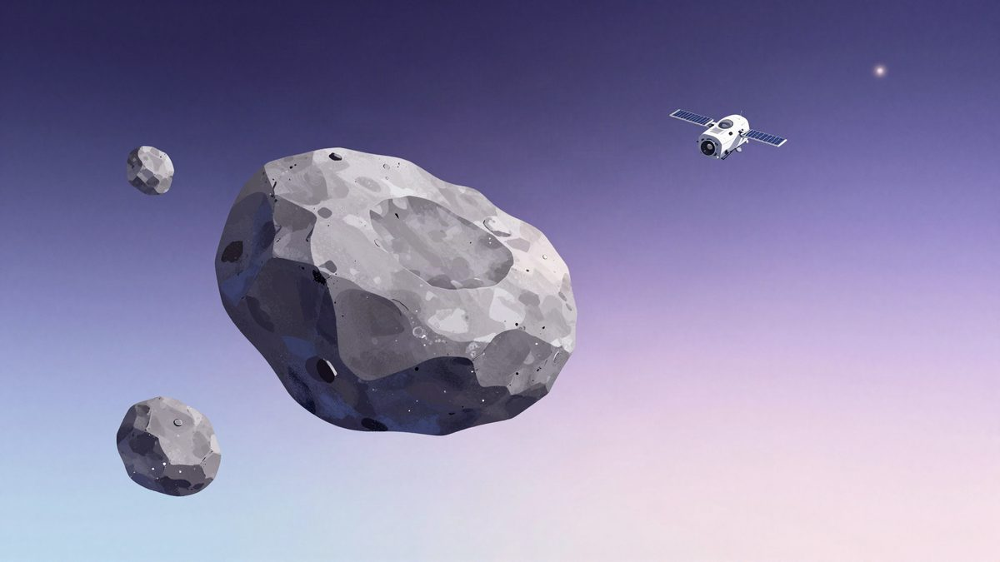

Sonda Hera poslala prve snimke Dimorfa: udar NASA-ina DART-a spljoštio je asteroid i ostavio krater veličine stadiona

Europska svemirska agencija ESA dobila je prve detaljne snimke posljedica udara NASA-ine letjelice DART u asteroid Dimorf. Snimila ih je sonda Hera, a na površini se vidi krater veličine stadiona. U siječnju 2027. planirano je odvajanje dvaju malih satelita, Juventasa i Milanija.
ESA je prvi put dobila detaljne snimke posljedica udara NASA-ine letjelice DART u asteroid Dimorf. Snimila ih je europska sonda Hera, koja se početkom studenoga 2026. približila asteroidu. Na površini se vidi krater veličine stadiona.
Udar nije ostavio samo veliku udubinu. Strana Dimorfa okrenuta prema mjestu udara spljoštena je gotovo cijelom širinom asteroida. Vidi se i da se Dimorf nakon udara i dalje kaotično vrti, a oko njega leti mnoštvo valutaka, od malih do vrlo velikih. Hera je pronašla i stotine dosad nepoznatih kamenih komada veličine nekoliko metara koji kruže oko para asteroida.
Što je prethodilo
DART je u Dimorf udario 26. rujna 2022. u sklopu NASA-ina eksperimenta promjene putanje asteroida. Letjelica mase oko 500 kg zabila se u Dimorf promjera 151 m brzinom od otprilike 6,1 km/s. Dimorf kruži oko većeg Didymosa, promjera oko 730 m, a njegov orbitalni period nakon udara skratio se za 33 minute.
Zemaljska promatranja nisu mogla pokazati kako je udar promijenio oblik i unutarnju strukturu asteroida. Ti su podaci važni za točne modele otklanjanja asteroida koji bi mogli ugroziti Zemlju, a upravo tu prazninu treba popuniti Hera.
Instrumenti i sljedeći koraci
Hera ima tri instrumenta: crno-bijelu kameru Asteroid Framing Camera (AFC), multispektralnu kameru Hyperscout H koja istodobno snima u 25 spektralnih pojasa i termalni imager TIRI koji mjeri temperaturu površine. Sonda je trenutačno 25 do 30 km od para asteroida i kreće se po izduženim orbitama prosječnom brzinom od oko 12 cm/s, uz pomoć potisnika male snage.
Istraživanje se nastavlja postupnim približavanjem. U prosincu 2026. Hera bi se trebala približiti na oko 13 km radi detaljnijih snimki, a u siječnju 2027. planirano je odvajanje dvaju malih satelita, cubesatova Juventas i Milani.
Juventas su razvili inženjeri iz Luksemburga. Ima radar niske frekvencije za proučavanje unutarnje građe asteroida, a kasnije bi se trebao pokušati spustiti na površinu. Talijanski Milani proučavat će sastav asteroidne tvari i okolne prašine. Ta mjerenja trebala bi pokazati kako je udar DART-a promijenio Dimorf i koliko je učinkovito na njega prenio impuls.
Izvor: 3DNews